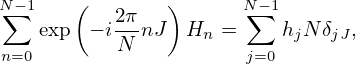
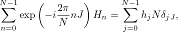

The DFT of time-domain array hj with j = 0,1,…,N − 1 is given by Eq. (49), i.e.,
|
| (51) |
with n = −N∕2,…,N∕2, where W = exp(2πi∕N). Note that the subscript of Hn is in the range n = −N∕2,…,N∕2 while the subscript of hj is in the range j = 0,1,…,N − 1. Further note that Hn contains N + 1 elements while hj contains only N elements. It is ready to find that the array defined in Eq. (51) has the following periodic property
 | (52) |
Using this general property, we obtain H−N∕2 = HN∕2, i.e., the two ending elements of Hn, namely H−N∕2 and HN∕2, are equal to each other. Thus only one value is needed to be stored. This can be used to reduce the number of elements of Hn that need to be stored by one. Then Hn contains only N elements rather than N + 1. Furthermore, we prefer to make the index of Hn and hj array have the same range, i.e., [0,N − 1]. This can be done by storing the negative frequency part (i.e., n = −N∕2,…,−1) of Hn in the location where the subscripts are respectively n = N∕2,…,N − 1, as is shown in Fig 2. A naive method of implementing this in a code is to first calculate the values of Hn in the range n = −N∕2,…,N∕2, then shift the array to achieve the desired storage arrangement, as is shown in Fig 2. It turns out that we have a better way to achieve the same goal: using again the periodic property Eq. (52), we know that the value of the Hn array elements with negative subscripts, n = −N∕2,…,−1, happens to be equal to the value of the Hn elements with subscripts n = N∕2,…,N − 1, respectively. Using this, we can simply use Eq. (51) to calculate values of Hn in the range n = 0,1,N − 1 and the array obtained is exactly in the desired storage arrangement.
 , + 1,…,N − 1. Since
H−N∕2 = HN∕2, the location j = N∕2 of the new array can be considered to be
storing both of them.
, + 1,…,N − 1. Since
H−N∕2 = HN∕2, the location j = N∕2 of the new array can be considered to be
storing both of them.In practice, we do not use Eq. (51) directly to calculate Hn. Instead, the famous Fast Fourier Transformation (FFT) algorithm is used to calculate Hn with n = 0,1,…,N − 1. Remember the storage arrangement discussed above is important for one to correctly interpret and use the output of FFT. For example, what frequency does the element Hj with j > N∕2 correspond to? The answer is obvious if we know the storage arrangement of FFT output: the corresponding frequency of No. jth element is given by
 | (53) |
Therefore the frequency of Hj with j > N∕2 is (j −N)fs∕N. Define f1 = 1∕T, which is the fundamental frequency of the signal, then Eq. (53) can also be written as
 | (54) |
Q: What is the negative frequency counterpart of the element Hj for j≠0 ? A: Examining the storage arrangement shown in Fig. 2, we know it is the element HN−j.